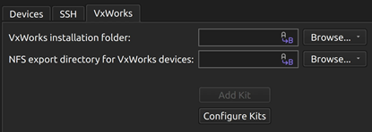
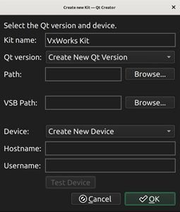

Create kits for VxWorks devices
To develop Qt applications for VxWorks, build Qt for VxWorks and create a VxWorks kit. Currently, you can develop applications with Qt 6.8 and build them for VxWorks 24.03 devices.
Note: Enable the VxWorks plugin to use it.
To create a kit:
- Go to Preferences > Devices > VxWorks.

- In VxWorks installation folder, enter the path to the directory where WindRiver installer installed VxWorks.
- In NFS export directory for VxWorks devices, enter the path to an NFS directory shared with the device.
- Select Add Kit.
- In Kit name, enter a name for the kit.

- In Path, select the folder that contains qmake for the Qt VxWorks build.
- In VSB path, enter the path to the VxWorks source build (VSB) directory.
- In Hostname, enter the host name or IP address of the device.
- In Username, enter the user name to access the device.
- Select OK to create a VxWorks kit.
- Go to Projects > Build & Run to activate the kit for your project.
Note: To deploy the built package, you can add a build step to the deploy configuration of the project that copies the built binary of your project to a NFS directory shared with the device.
See also Enable and disable plugins, How to: VxWorks, and Qt for VxWorks.